Requested a list of GO terms related to energy usage and storage from ChatGPT4o:
Energy Usage / Energy Production:
| GO Term | Term Name | Notes |
|---|---|---|
| GO:0006096 | Glycolysis | Breakdown of glucose to produce ATP. |
| GO:0006091 | Generation of precursor metabolites and energy | Broad, covers glycolysis, TCA cycle, etc. |
| GO:0006099 | Tricarboxylic acid cycle (TCA cycle) | AKA Krebs cycle — key ATP-generating pathway. |
| GO:0006119 | Oxidative phosphorylation | ATP generation using the mitochondrial electron transport chain. |
| GO:0006635 | Fatty acid beta-oxidation | Breaks down fats to feed into energy production. |
| GO:0009150 | Purine ribonucleotide biosynthetic process | Important for making ATP and other nucleotides (energy carriers). |
| GO:0030163 | Protein catabolic process | Energy extraction from proteins, especially during starvation. |
Energy Storage:
| GO Term | Term Name | Notes |
|---|---|---|
| GO:0008610 | Lipid biosynthetic process | Making lipids for energy storage. |
| GO:0045721 | Negative regulation of gluconeogenesis | Helps switch from producing glucose to storing it. |
| GO:0046467 | Membrane lipid catabolic process | Mobilizing stored energy from lipid stores. |
| GO:0016042 | Lipid catabolic process | General term for fat breakdown. |
| GO:0005975 | Carbohydrate metabolic process | Storage of energy as glycogen or starch (depending on organism). |
| GO:0045722 | Positive regulation of glycolysis | Promotes glucose usage over storage when energy is needed. |
| GO:0042594 | Response to starvation | Triggering the usage of energy stores (lipids, proteins, etc.). |
Bonus Terms (helpful if you want full coverage):
| GO Term | Term Name | Notes |
|---|---|---|
| GO:0046034 | ATP metabolic process | Directly handling the cell’s energy currency. |
| GO:0006094 | Gluconeogenesis | Building glucose for later use or emergency supply. |
| GO:0006629 | Lipid metabolic process | Umbrella term for both storage and usage of lipids. |
| GO:0032869 | Cellular response to insulin stimulus | Insulin controls whether energy is stored or used. |
| GO:0006006 | Glucose metabolic process | General term covering breakdown and storage. |
Then generated a gene set of genes in our time series Apul reads that are annotated with at least one of these terms. This gene set was used in the ML model.
Full code
Full rendered code
7 Energy Usage/Storage (GO terms)
7.1 The model
Train elastic models to predict gene expression PCs from miRNA expression
# Train models predicting gene expression PCs from miRNA expression
models_energy_GO <- train_models(energy_GO_pcs, vsd_miRNA)Extract feature importance.
feature_importance_energy_GO <- get_feature_importance(models_energy_GO)
head(feature_importance_energy_GO, 20) # Top predictive miRNA## # A tibble: 20 × 2
## Feature MeanImportance
## <chr> <dbl>
## 1 Cluster_17173 0.222
## 2 Cluster_5516 0.202
## 3 Cluster_17623 0.192
## 4 Cluster_2372 0.184
## 5 Cluster_17192 0.181
## 6 Cluster_9420 0.170
## 7 Cluster_9786 0.169
## 8 Cluster_14146 0.164
## 9 Cluster_5517 0.150
## 10 Cluster_14605 0.142
## 11 Cluster_3301 0.140
## 12 Cluster_1819 0.129
## 13 Cluster_17186 0.105
## 14 Cluster_14165 0.104
## 15 Cluster_10452 0.0935
## 16 Cluster_9366 0.0924
## 17 Cluster_4752 0.0864
## 18 Cluster_4036 0.0862
## 19 Cluster_1865 0.0838
## 20 Cluster_3226 0.0816Evaluate performance.
performance_results_energy_GO <- evaluate_model_performance(models_energy_GO, energy_GO_pcs, vsd_miRNA)
summary(performance_results_energy_GO$R2)## Min. 1st Qu. Median Mean 3rd Qu. Max. NA's
## 0.1121 0.5775 0.6554 0.6060 0.7653 0.9519 137.2 Results
Plot results.
# Select top predictive features
# few enough miRNA that we can show all
top_features_energy_GO <- feature_importance_energy_GO %>% top_n(50, MeanImportance)
# Plot
ggplot(top_features_energy_GO, aes(x = reorder(Feature, MeanImportance), y = MeanImportance)) +
geom_bar(stat = "identity", fill = "steelblue") +
coord_flip() + # Flip for readability
theme_minimal() +
labs(title = "miRNA as Predictive Features",
x = "miRNA",
y = "Mean Importance")
ggplot(performance_results_energy_GO, aes(x = as.factor(PC), y = R2)) +
geom_point(color = "darkred", size = 3) +
geom_hline(yintercept = mean(performance_results_energy_GO$R2, na.rm = TRUE), linetype = "dashed", color = "blue") +
theme_minimal() +
labs(title = "Model Performance Across Gene Expression PCs",
x = "Gene Expression PC",
y = "R² (Variance Explained)") +
theme(axis.text.x = element_text(angle = 45, hjust = 1)) # Rotate labels## Warning: Removed 13 rows containing missing values or values outside the scale range
## (`geom_point()`).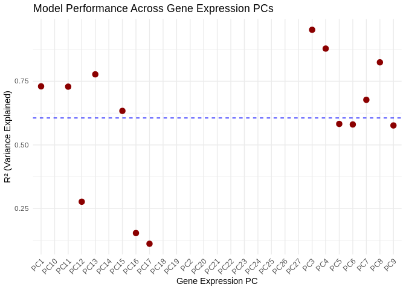
View components associated with gene PCs
# Get the PCA rotation (loadings) matrix from the original gene PCA
loadings_energy_GO <- pca_energy_GO$rotation # Each column corresponds to a PC
# Convert to data frame and reshape for plotting
loadings_energy_GO_df <- as.data.frame(loadings_energy_GO) %>%
rownames_to_column(var = "gene") %>%
pivot_longer(-gene, names_to = "energy_GO_PC", values_to = "Loading")
# View top CpGs contributing most to each PC
top_genes_energy_GO <- loadings_energy_GO_df %>%
group_by(energy_GO_PC) %>%
arrange(desc(abs(Loading))) %>%
slice_head(n = 20) # Select top 10 CpGs per PC
print(top_genes_energy_GO)## # A tibble: 800 × 3
## # Groups: energy_GO_PC [40]
## gene energy_GO_PC Loading
## <chr> <chr> <dbl>
## 1 FUN_028200 PC1 -0.115
## 2 FUN_040444 PC1 -0.113
## 3 FUN_017915 PC1 -0.112
## 4 FUN_001396 PC1 0.109
## 5 FUN_026618 PC1 0.108
## 6 FUN_029673 PC1 0.107
## 7 FUN_023596 PC1 -0.107
## 8 FUN_000370 PC1 0.106
## 9 FUN_039293 PC1 -0.106
## 10 FUN_001160 PC1 0.105
## # ℹ 790 more rowsView predicted vs actual gene expression values to evaluate model.
# Choose a gene expression PC to visualize (e.g., the most predictable one)
best_pc_energy_GO <- performance_results_energy_GO$PC[which.max(performance_results_energy_GO$R2)]
# Extract actual and predicted values for that PC
actual_values_energy_GO <- energy_GO_pcs[[best_pc_energy_GO]]
predicted_values_energy_GO <- predict(models_energy_GO[[best_pc_energy_GO]], as.matrix(vsd_miRNA), s = "lambda.min")
# Create data frame
prediction_df_energy_GO <- data.frame(
Actual = actual_values_energy_GO,
Predicted = predicted_values_energy_GO
)
# Scatter plot with regression line
ggplot(prediction_df_energy_GO, aes(x = Actual, y = lambda.min)) +
geom_point(color = "blue", alpha = 0.7) +
geom_smooth(method = "lm", color = "red", se = FALSE) +
theme_minimal() +
labs(title = paste("Predicted vs. Actual for", best_pc_energy_GO),
x = "Actual Gene Expression PC",
y = "Predicted Gene Expression PC") +
annotate("text", x = min(actual_values_energy_GO), y = max(predicted_values_energy_GO),
label = paste("R² =", round(max(performance_results_energy_GO$R2, na.rm=TRUE), 3)),
hjust = 0, color = "black", size = 5)## `geom_smooth()` using formula = 'y ~ x'
## `geom_smooth()` using formula = 'y ~ x'View top 20 genes associated with the PC with the highest R^2
print(top_genes_energy_GO%>%filter(energy_GO_PC==best_pc_energy_GO))## # A tibble: 20 × 3
## # Groups: energy_GO_PC [1]
## gene energy_GO_PC Loading
## <chr> <chr> <dbl>
## 1 FUN_042982 PC3 0.176
## 2 FUN_008385 PC3 0.140
## 3 FUN_036246 PC3 0.139
## 4 FUN_014563 PC3 0.134
## 5 FUN_011723 PC3 -0.131
## 6 FUN_031898 PC3 0.124
## 7 FUN_015086 PC3 0.123
## 8 FUN_037137 PC3 -0.121
## 9 FUN_015261 PC3 0.120
## 10 FUN_023676 PC3 0.119
## 11 FUN_013363 PC3 -0.118
## 12 FUN_014844 PC3 -0.118
## 13 FUN_022926 PC3 -0.109
## 14 FUN_037111 PC3 -0.107
## 15 FUN_014565 PC3 0.104
## 16 FUN_040116 PC3 -0.104
## 17 FUN_022700 PC3 0.101
## 18 FUN_029437 PC3 0.101
## 19 FUN_007022 PC3 -0.100
## 20 FUN_022927 PC3 -0.0997Plot performance for all PCs
# Select all PCs with R^2 values above line in plot
all_pcs_energy_GO <- performance_results_energy_GO %>% filter(R2 > 0.75) %>% pull(PC)
for (pc in all_pcs_energy_GO) {
# Extract actual and predicted values for that PC
actual_values <- energy_GO_pcs[[pc]]
predicted_values <- predict(models_energy_GO[[pc]], as.matrix(vsd_miRNA), s = "lambda.min")
# Create data frame
prediction_df <- data.frame(
Actual = actual_values,
Predicted = predicted_values
)
# Scatter plot with regression line
plot <- ggplot(prediction_df, aes(x = Actual, y = lambda.min)) +
geom_point(color = "blue", alpha = 0.7) +
geom_smooth(method = "lm", color = "red", se = FALSE) +
theme_minimal() +
labs(title = paste("Predicted vs. Actual for", pc),
x = "Actual Gene Expression PC",
y = "Predicted Gene Expression PC") +
annotate("text", x = min(actual_values), y = max(predicted_values),
label = paste("R² =", round(max(performance_results_energy_GO[performance_results_energy_GO$PC==pc,2], na.rm=TRUE), 3)),
hjust = 0, color = "black", size = 5)
print(plot)
}## `geom_smooth()` using formula = 'y ~ x'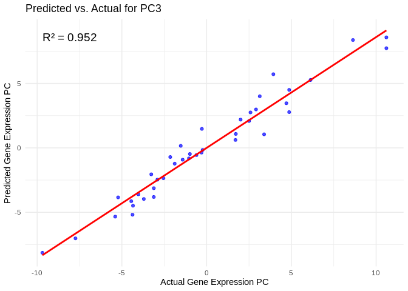
## `geom_smooth()` using formula = 'y ~ x'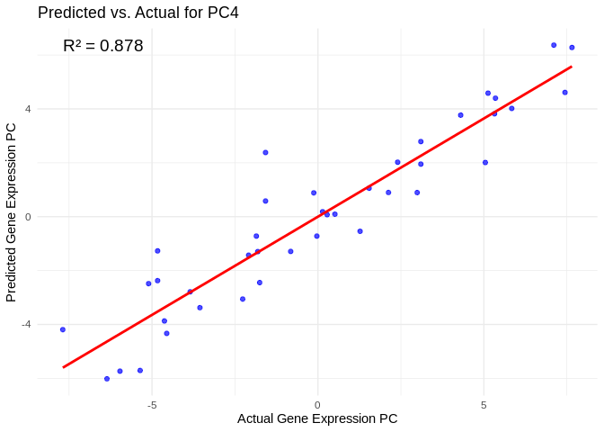
## `geom_smooth()` using formula = 'y ~ x'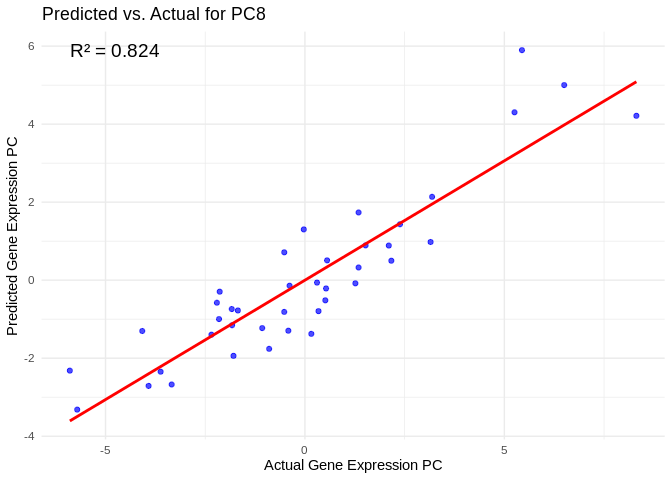
## `geom_smooth()` using formula = 'y ~ x'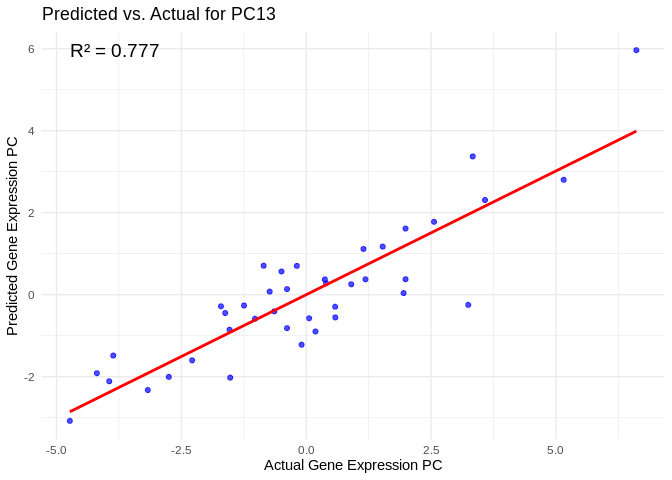
We can also look at which miRNA(s) contributed most to predicting gene PCs of interest
get_feature_importance_for_pc <- function(model) {
coefs <- as.matrix(coef(model, s = "lambda.min"))[-1, , drop = FALSE] # Remove intercept
coefs_df <- data.frame(Feature = rownames(coefs), Importance = abs(as.numeric(coefs)))
return(coefs_df %>% arrange(desc(Importance))) # Sort by importance
}
for (pc in all_pcs_energy_GO) {
# Extract feature importance for the most predictable PC
best_pc_model <- models_energy_GO[[pc]]
best_pc_importance <- get_feature_importance_for_pc(best_pc_model)
# Plot top most important miRNA for predicting this PC
plot <- ggplot(best_pc_importance %>% head(20), aes(x = reorder(Feature, Importance), y = Importance)) +
geom_bar(stat = "identity", fill = "steelblue") +
coord_flip() +
theme_minimal() +
labs(title = paste("Top miRNA Predictors for", pc),
x = "miRNA",
y = "Importance Score")
print(plot)
}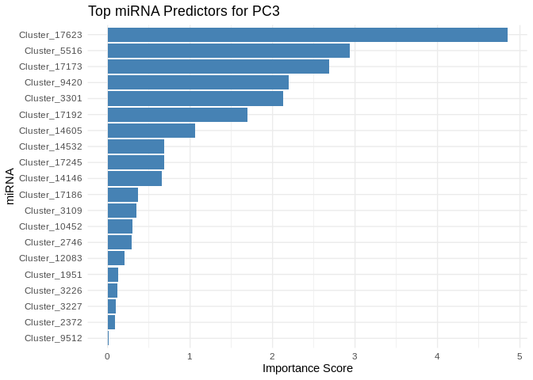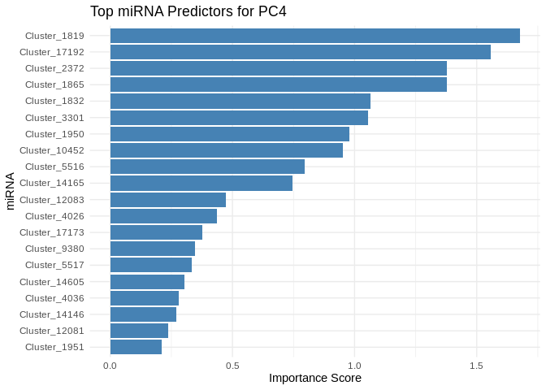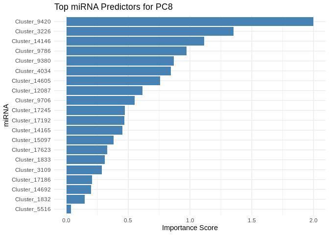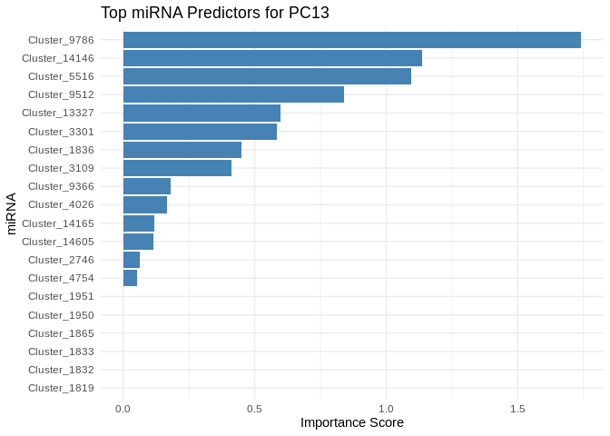
8 Compare
Visualize the relative importance of miRNA in predicting expression for these different gene sets:
# Perfomr min-max normalization on the mean importance of miRNA for each group
# This will place all along a 0-1 range for comparison purposes
normalize <- function(x) {
(x - min(x)) / (max(x) - min(x))
}
# Normalize
top_features_Host_AFDW$MeanImportance_norm <- normalize(top_features_Host_AFDW$MeanImportance)
top_features_Am$MeanImportance_norm <- normalize(top_features_Am$MeanImportance)
top_features_ATP_prod_GO$MeanImportance_norm <- normalize(top_features_ATP_prod_GO$MeanImportance)
top_features_energy_GO$MeanImportance_norm <- normalize(top_features_energy_GO$MeanImportance)
# Add group labels
top_features_Host_AFDW <- top_features_Host_AFDW %>% mutate(group = "Host_AFDW")
top_features_Am <- top_features_Am %>% mutate(group = "Am")
top_features_ATP_prod_GO <- top_features_ATP_prod_GO %>% mutate(group = "ATP_prod_GO")
top_features_energy_GO <- top_features_energy_GO %>% mutate(group = "energy_GO")
# Set rows in same order
top_features_Am <- top_features_Am[rownames(top_features_Host_AFDW),]
top_features_ATP_prod_GO <- top_features_ATP_prod_GO[rownames(top_features_Host_AFDW),]
top_features_energy_GO <- top_features_energy_GO[rownames(top_features_Host_AFDW),]
# Combine
all_gene_sets <- bind_rows(top_features_Host_AFDW, top_features_Am, top_features_ATP_prod_GO, top_features_energy_GO)
# Remove raw mean importance
all_gene_sets <- all_gene_sets %>% select(!MeanImportance)
# Wide format: rows = miRNAs, columns = groups
heatmap_df <- all_gene_sets %>%
pivot_wider(names_from = group, values_from = MeanImportance_norm)
heatmap_df <- as.data.frame(heatmap_df)
# Melt into long format for ggplot
heatmap_long <- melt(heatmap_df, id.vars = "Feature")
ggplot(heatmap_long, aes(x = variable, y = Feature, fill = value)) +
geom_tile(color = "white") +
scale_fill_gradient(low = "white", high = "red") +
theme_minimal() +
labs(x = "Group", y = "Feature", fill = "Importance") +
theme(axis.text.x = element_text(angle = 45, hjust = 1))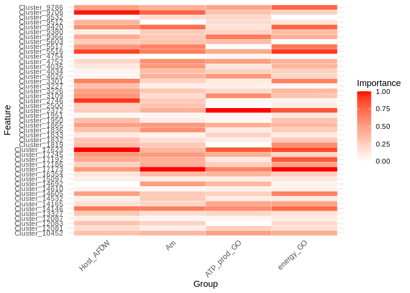
Cluster by miRNA importance
# Make Feature column the rownames and convert to matrix
rownames(heatmap_df) <- heatmap_df$Feature
heatmap_matrix <- as.matrix(heatmap_df[, -1]) # Removes the 'Feature' column
pheatmap(
heatmap_matrix,
cluster_rows = TRUE, # Clustering miRNAs (rows) by similarity in importance
cluster_cols = TRUE, # Clustering groups (columns)
scale = "none", # No scaling (since data is already normalized)
show_rownames = TRUE, # Show miRNA names
show_colnames = TRUE, # Show group names
color = colorRampPalette(c("white", "red"))(100), # Red gradient for importance
main = "miRNAs Importance Across Groups" # Title of the heatmap
)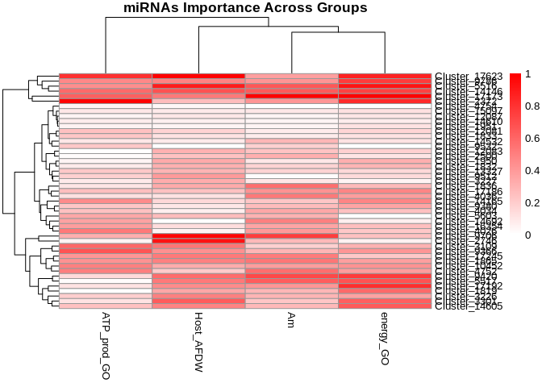